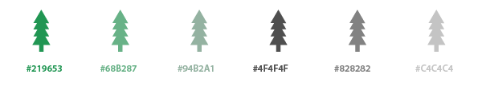
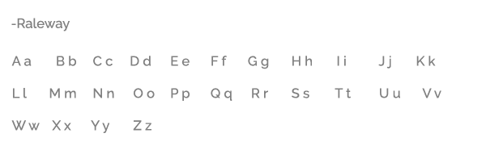
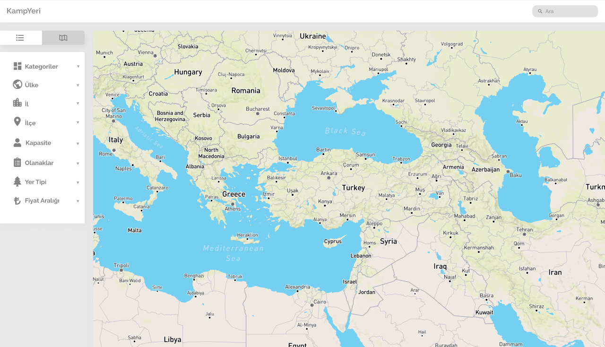
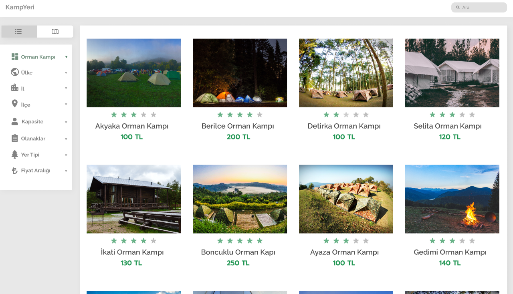

Kamp Yeri
Last summer, I worked at Toltek company as an intern and designed this project. KampYeri is about campsites and designed to help people to find all the information that they need.
1.Colors
The color green symbolizes nature. So, I thought green color palette could be a better option for this app. Also, I used grey for text and included white to give a clean appearance.
2.Typography
Raleway is a free Google font. Initially designed by Matt McInerney and expanded by Pablo Impallari and Rodrigo Fuenzalida.
3.Pages
Map View
List View

Detail Page